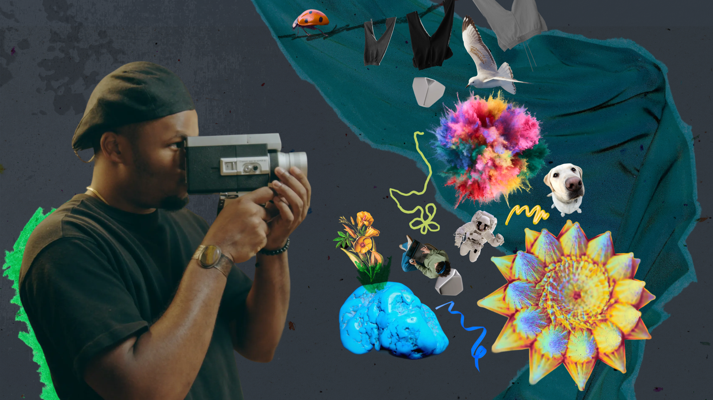
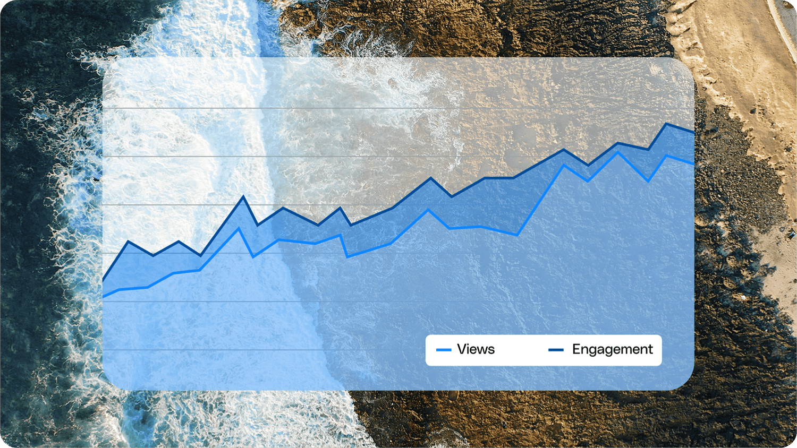

01 / CollegeBot
Improving onboarding and search with research and experimentation
How can students discover, adopt, and trust a campus AI assistant?
Product Management · Product Analytics · A/B Testing · Experimentation · Customer Research
Portfolio
I turn user behavior, customer research, and campaign data into product and growth decisions.
6 projects
How can students discover, adopt, and trust a campus AI assistant?
Product Management · Product Analytics · A/B Testing · Experimentation · Customer Research
How should teacher behavior and market evidence shape product and adoption decisions?
Product Analytics · Market Entry · Competitive Analysis · SQL · Looker

How can product and customer signals shape growth and product-marketing decisions?
Product Analytics · Lifecycle Marketing · Enterprise Research · Competitive Intelligence · SQL
How can lead-quality data guide B2B acquisition spend?
Growth Analytics · Paid Media Measurement · Lead Quality · Funnel Analysis · AI Automation
How can competitive media signals guide campaign and creator investment?
Marketing Analytics · Competitive Intelligence · Media Strategy · Budget Management · Creator Partnerships

How can cross-platform reporting guide campaign and keyword decisions?
Campaign Measurement · Cross-Platform Analytics · Paid Search Analytics · Keyword Optimization · Digital Media Strategy